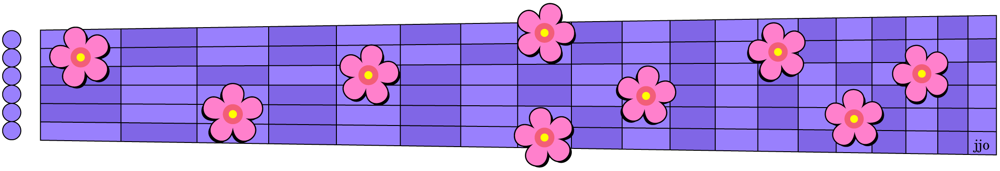

“Knock, knock.” “Who's there?” “Jamaica.” “Jamaica who?” “Jamaica call to your mother on Mother's Day?” Historically so many people called Mom on Mother's Day that it was among the highest call traffic days for AT&T. Curiously, back when calling collect was a thing, AT&T's peak day for collect calls was Father's Day! Go figure. Since 2024, however, they note that 75% of people send texts instead of talking to Mom on the phone. What's a mother to do?
Fortunately, there are lots of other ways to remember Mom, and this month's sightreading handout* has two more. They're both pleasant sightreads in first and seventh positions, and even playable along single strings for a different kind of experience. The first has some chromatic runs and the second is a more traditional American-Irish sound. But for the full Mother's Day effect, you'll want to check out the lyrics on the back page where one of them literally spells out what a mother gives.
This handout also is an example of yet another reason to brush up on your sightreading. With over a thousand melodies to choose from, there's bound to be one for every special occasion. That means, instead of just sending a text next time, you could send a video short of you playing your message on your guitar! It would make a mother proud!